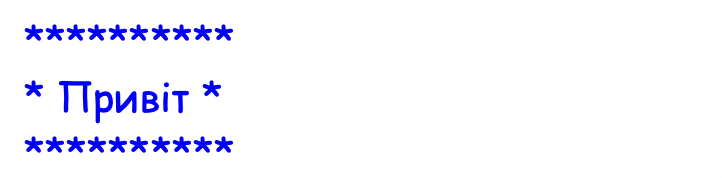
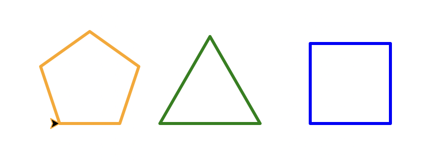
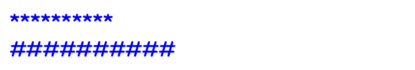
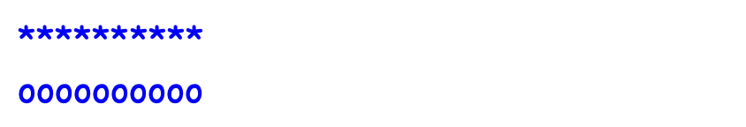
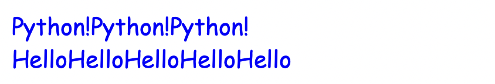
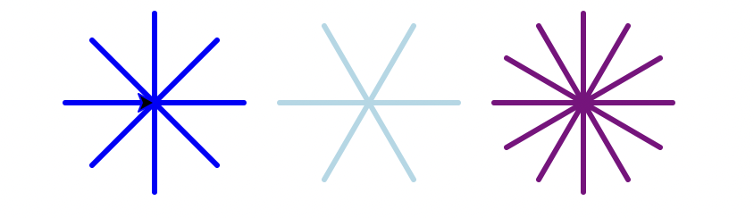
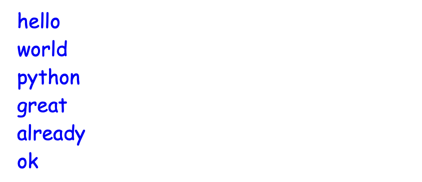

Частина 1 — def: що таке функція
Частина 1 — def: що таке функція
▶
Для чого потрібні функції
Уяви ситуацію: тобі потрібно вивести красиве привітання в кількох різних місцях програми. Твій код виглядатиме приблизно так:
print("=" * 24)
print(" Ласкаво просимо! ")
print("=" * 24)
print()
# ... тут працює якийсь інший код ...
print("=" * 24)
print(" Ласкаво просимо! ")
print("=" * 24)
print()Замість трьох рядків коду ми написали вже шість. А що, якщо ти захочеш змінити текст привітання? Доведеться вручну шукати і переписувати цей блок коду усюди, де він зустрічається. Подібну проблему можна вирішити за допомогою функцій — вони дозволяють написати блок коду один раз, дати йому назву, і використовувати його далі вже за цією назвою.
Насправді, ти вже постійно користуєшся функціями, просто досі це були готові команди. print(), input(), len(), random.randint(), math.sqrt() — усе це функції, які вже вбудовані в Python. Сьогодні ж ми навчимося створювати свої власні інструменти.
Як створити функцію
def greet():
print("=" * 24)
print(" Ласкаво просимо! ")
print("=" * 24)
print()Розберемо кожен елемент:
- def — ключове слово (від англ. define — визначити). Каже Python: "зараз я описую нову команду".
- greet — назва функції. Ті самі правила що й для змінних: малі літери, без пробілів, можна _.
- () — дужки обов'язкові, навіть якщо вони порожні.
- : — двокрапка, як в if та for.
- рядки всередині — з відступом (Tab).
Визначення ≠ виконання
Написати def — це як записати рецепт. Рецепт сам по собі нічого не готує. Щоб функція виконалась — її треба викликати:
def greet():
print("=" * 24)
print(" Ласкаво просимо! ")
print("=" * 24)
print()
greet() # ← виклик: тут функція виконується
greet() # ← і ще раз
greet() # ← і щеТепер замість 9 рядків — 3 виклики. І щоб змінити текст привітання — переписуємо лише один рядок коду.
Важливо: функцію потрібно спочатку визначити (def), і лише потім викликати. Якщо виклик стоїть вище за def — Python видасть помилку, бо ще не знає про цю функцію.
Практика 1
▶
Завдання
Завдання 1.1: Привітання
- Створи функцію say_hello, яка виводить текст: Hello! Nice to meet you!
- Виклич цю функцію три рази.
Завдання 1.2: Спрости цей код
Одне із правил хорошої програми – уникати повторюваного коду. Подивись на цю програму, яка малює два однакові квадрати:
import turtle
t = turtle.Turtle()
# Малюємо перший квадрат
for i in range(4):
t.forward(50)
t.left(90)
t.penup()
t.forward(100)
t.pendown()
# Малюємо другий квадрат
for i in range(4):
t.forward(50)
t.left(90)
turtle.done()Створи функцію draw_square, яка малює квадрат, і відредагуй код вище так, щоб прибрати повторення.
Завдання 1.3: Вивчення слів
Напиши функцію get_random_word. Всередині цієї функції:
- Створи список із 5 назв фруктів англійською мовою.
- Використай random.choice(список), щоб обрати випадкове слово зі списку.
- Виведи на екран повідомлення: "Word to practice: [вибране слово]".
Використай цю функцію, щоб отримати два випадкові слова.
Частина 2 — Параметри: функції з вхідними даними
▶
Параметри та аргументи
Функція greet() з попередньої частини завжди виводила однаковий текст. А що як нам треба привітати різних людей на імʼя? Для цього використовують параметри:
def greet(name):
print("=" * 24)
print(f" Привіт, {name}! ")
print("=" * 24)
greet("Яна")
greet("Олена")
greet("Вінстон")name — це параметр: тимчасова змінна, яка існує лише всередині функції і отримує нове значення при кожному виклику.
А конкретні значення, які ми передаємо функції вже при виклику (наприклад, "Олена") – це аргументи.
Кілька параметрів
Функція може приймати більше одного параметра — їх перераховують через кому.
При цьому важливий порядок: перший аргумент при виклику → перший параметр...
def happy_birthday(name, age):
print(f"Happy birthday, {name}!")
print(f"You are {age} years old!\n")
happy_birthday("Sam", 10) # good
happy_birthday(10, "Sam") # weird
Практика 2
▶
Завдання
Завдання 2.1: Рамка для тексту
Напиши функцію frame, яка автоматично вираховує розмір тексту і малює навколо нього рамку із заданого символу.
Приклад виклику функції:
frame("Привіт", "*")
Завдання 2.2: Розумне привітання
Напиши функцію greet, яка вітається по-різному залежно від часу доби.
- Якщо час менший за 12 – "Good morning, [name]!".
- Інакше, якщо час менший за 17 – "Good afternoon, [name]!".
- Інакше, якщо час менший за 24 – "Good evening, [name]!".
Приклад виклику функції:
greet("Max", 5)
greet("Nick", 16)
greet("Emily", 21)
Завдання 2.3: Універсальна фігура
Замість того, щоб писати окремий код для трикутника, квадрата і п'ятикутника, створимо одну універсальну функцію draw(sides, length, color).
Ця функція:
- Змінює колір черепашки на color.
- Рахує кут повороту залежно від кількості сторін (360 / sides).
- Використовує цикл for i in range щоб намалювати правильну фігуру зі сторонами довжиною length.
Використай цю функцію щоб намалювати трикутник, квадрат та пʼятикутник.

Частина 3 — Значення за замовчуванням
▶
Необов'язкові параметри
Іноді зручно, щоб параметр мав "типове" значення — яке використовується, якщо його не передали при виклику:
def divider(symbol="*"):
print(symbol * 10)
divider()
divider("#")
Параметри зі значенням за замовчуванням завжди йдуть після звичайних параметрів — інакше Python не зможе зрозуміти, який аргумент до якого параметра відноситься.
# ✅ Правильно:
def greet(name, age=20, lang="ukrainian"):
...
# ❌ Помилка:
def greet(lang="ukrainian", age=20, name):
...Навіщо це потрібно?
Значення за замовчуванням — це спосіб зробити функцію зручною для простих випадків і гнучкою для складних. У вбудованих функціях це теж використовується. Наприклад:
print("Привіт") # end="\n" за замовчуванням
print("Привіт", end=" ") # змінюємо за потреби
Практика 3
▶
Завдання
Завдання 3.1: Лінія-роздільник
Напиши функцію divider, яка малює лінію з 10 символів. За замовчуванням зроби символ "*".
divider()
divider("o")
Завдання 3.2: Повторювач тексту
Створи функцію repeat, яка повторює слово кілька разів підряд. Зроби так, щоб стандартна кількість повторень дорівнювала 3.
Крім того, використай метод text.strip(), щоб прибрати порожні відступи до та після слова.
repeat(" Python! ")
repeat(" Hello", 5)
Завдання 3.3: Сніжинка
Створимо функцію snowflake для малювання сніжинок. Зазвичай ми уявляємо їх блакитними (lightblue) та з 6 промінчиками — тому встанови це як параметри за замовчуванням.

Підказка:
- Кількість променів сніжинки – це кількість повторень циклу for.
-
При кожному повторенні:
- Малюємо лінію (наприклад, 50 пікселів).
- Повертаємось назад на ту саму кількість пікселів.
- Робимо поворот вліво на кут = 360 / кількість променів.
Домашнє завдання: Методи рядків
▶
Метод .strip()
Цей метод "очищає" краї тексту (початок і кінець) від зайвих символів. Якщо викликати його без аргументів, він видалить усі пробіли:
text = " hello "
result = text.strip()
print(result) # Виведе: "hello"Якщо ж передати йому в дужках рядок із певними символами, він видалить всі ці символи (це зручно для очищення від пунктуації):
word = " ... Python?! "
result = word.strip(" .!?")
print(result) # Виведе: "Python"Зверни увагу, що щоб крім пунктуації також видалити зайві пробіли, в рядку " .!?" потрібно вказати пробіл.
Методи .lower() та .upper()
Ці методи змінюють регістр літер (роблять їх всі маленькими або великими):
print("HEllo".lower()) # Виведе: "hello"
print("hello".upper()) # Виведе: "HELLO"Ланцюжок методів (Method chaining)
У Python можна викликати кілька методів підряд в одному рядку коду! Вони будуть виконуватися по черзі (зліва направо):
text = " WoRld! "
# Спершу видаляємо пробіли, а потім робимо літери маленькими:
result = text.strip().lower()
print(result) # Виведе: "world!"
Домашнє завдання: Практика
▶
Завдання
Завдання 1: Очищення слова
Напиши функцію clean_word, яка приймає слово і:
- Прибирає з його країв всі пробіли та знаки пунктуації.
- Перетворює всі літери на маленькі.
- Виводить результат на екран.
Перевір роботу функції на цьому коді:
clean_word(" Hello! ")
clean_word("world,")
clean_word("(Python?)")
clean_word("[GREAT...] ")
clean_word(":;already")
clean_word(" ok -")
Завдання 2: Вигук
Створи функцію exclaim, яка перетворює звичайний текст на емоційний вигук.
Перевірка:
exclaim(" ok ")
exclaim(" Congratulations ")